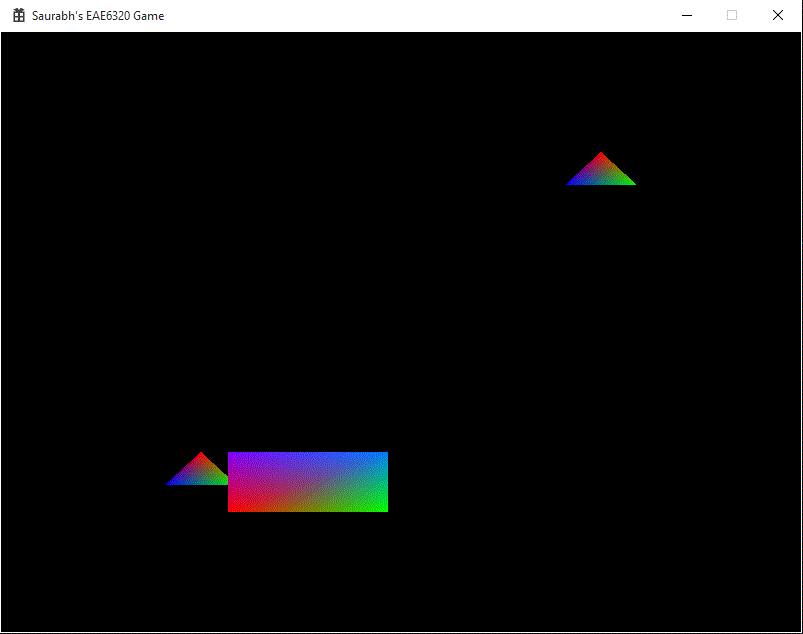

This assignment, we add more gameplay to the game we are building the engine for. The goal was to add user input via the keyboard in order to make an object on the screen move. We could have modified the vertex data, but it has many disadvantages, which are discussed later. Instead we used uniforms, which are variables in the shader code. We also decided to introduce a higher level concept called an object (GameObject in my code). This will encapsulate any future gameplay elements. Another requirement was to use the uniforms in shaders as position offsets. Hence all the objects are centered on the origin and then placed at a position with the offset. In the image, you can see the output for the assignment, with the triangles having the same mesh file. So any changes to that particular file, would change both the triangles.

These are high level entities which are used to store data related to the gameplay. Considering its functionality, it should not be a part of the Graphics project. Hence I created a new project called Core, which will consist of all the core functionality of the Engine. The main objective of this was to encapsulate the mesh and its corresponding effect into one structure. There were two options for this, either to encapsulate everything into one object or to split it into two. I chose the latter option as I felt it made more sense to keep the Graphics related data away from the unrelated data. Hence I created the Renderable data structure to encapsulate Mesh and the Effect. This is stored in the Graphics project and is modified in Graphics.cpp and nowhere else. This separation of data between GameObject and Renderable allows to write gameplay mechanics without having to access the Graphics project. However, this changing of the structure of data resulted in the way I was storing meshes. Previously, I was creating and storing all the mesh and effect objects in Graphics. Now I maintain all the GameObjects in Game project, where they should have been all along. Also, I pass just the list of Renderables to the Graphics render function to draw all the meshes:
void eae6320::Graphics::Render(eae6320::Graphics::Renderable ** i_RenderingList, const unsigned int i_RenderingListLength)
During the implementation of the previous assignments, I had tried two methods of passing the Direct3dDevice to the mesh and effect. I used a static member variable for the mesh and used the context for the effect. But while doing this assignment, I found out that using the context struct was causing more problems than it was solving. Using static variables allowed me to set them in a different section of the code, without having them being passed around all the function calls. I can set them without even declaring a single mesh or effect beforehand like:
Mesh::SetDirect3dDevice(s_direct3dDevice);
Effect::SetDirect3dDevice(s_direct3dDevice);
Uniform variables are used to communicate with your vertex or fragment shader from "outside" - OpenGL.org. We use uniforms to store the offset of the mesh from the origin. We could have stored the offset in vertex data and changed the buffer every frame, but it is not encouraged to do it this way, because:
Instead, to use uniforms, to offset each vertex from the original position, we simply add the uniform variable to each vertex position in the vertex shader.
Direct3D - o_position = float4( i_position + g_position_offset, 0.0, 1.0 );
OpenGL - o_position = float4( i_position + g_position_offset, 0.0, 1.0 );
The function which allows us to modify the offset from code is: void eae6320::Graphics::Effect::SetDrawCallUniforms(float * floatArray).
Use the (Arrow keys) to move the rectangle mesh and press ESC to exit the game.
I could have used code from last semester for checking the input, but that was done with the help of key press callbacks in the 2D rendering library provided by Joe. I did not want to add a completely different rendering library just to use the key press callback events. Also, the example code given by John-Paul used the Windows Virtual Keys, which also allowed for using the arrow keys, which are done in the code with the macros - VK_LEFT, VK_UP, VK_RIGHT, VK_DOWN. On the other hand, the structure for GameObject and Renderable is similar to what I had previous semester. Creating the same format was not a problem for this assignment.
Time Estimate
Reading: 1 hour
Coding: 4 hours
Debugging: 0.5 hours
Writeup: 1 hour
Download Links
Download Direct3D
Download OpenGL